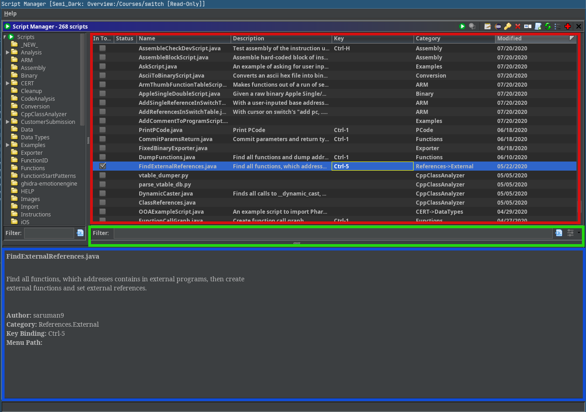

Ghidra. Dev
Abc Xyz
Table of Contents
1 Introduction
1.1 About Ghidra
- Integrated environment for software reverse engineering (IDE for SRE)
- Developed by NSA Research
- Written almost entirely in Java
- Some native code (C/C++)
1.2 Major parts
1.2.1 Programs
- ELF
- PE
- Mach-O
- COFF
- PDB
- Raw binaries
- etc
1.2.2 Project Manager
1.2.3 Tools
1.2.4 Plugins
1.2.5 Scripts
1.2.6 Server
- Multiple users work together on the same program(s)
- Network storage for the shared project
- Controls user access
- Allows files to be versioned (à la primitive Git)
- Others features
1.3 Why use Ghidra?
- Designed to handle large data sets (not large binaries!)
- Supports collaboration
- Highly configurable environment
- Highly extensible via plugins and scripts
- Multi-platform (Linux, Mac, Windows, FreeBSD, Haiku, etc)
2 IDE for developing (Eclipse IntelliJ IDEA)
2.1 Why not Eclipse
Not to my taste, but…
- GhidraDev plugin (extensions and scripts developing)
- GhidraSleighEditor plugin (Sleigh linter)
2.2 My alternatives
- Emacs (Eclipse backend)?
- VIM (Eclipse backend)?
- IntelliJ IDEA (Community Edition) ✓
2.3 Integrate with Ghidra (Linux)
2.3.1 Plugins
Use default
SkeletonprojectCopy
Skeleton's directory (or yours prepared extension) to needed location
- Create the project
File→New→Project from Existing Sources...(use Gradle model)- Choose the directory
- Set
gradle's environment (GHIDRA_INSTALL_DIR)- Set in Run/Debug Configurations (Gradle)
Create
gradle.propertiesfile and set the environment:GHIDRA_INSTALL_DIR = /home/user/ghidra
Point to the directory of sources of Ghidra, when it will be needed

2.3.2 Scripts
- Create or use existing the
ghidra_scriptsdirectory Use existing
HelloWorldScriptscript as a template${GHIDRA_HOME}/Ghidra/Features/Base/ghidra_scripts/HelloWorldScript.java
- Import the directory as Existing Sources without models
- Add Ghidra as module to the project:
- Open Project Structure (
F4hotkey in Project window) - Select Modules item
Import Module (select the directory of sources of Ghidra)
- Open Project Structure (
- Wait while IntelliJ IDEA indexes Ghidra's files
Add module dependencies via Context Actions
- Also you can add templates/snippets for scripts
2.4 Debug
Run Ghidra in Debug mode
$ /opt/ghidra/support/ghidraDebug
Attach to Process…
- Debug a script/plugin
- Use a recompiling for testing
2.5 Ghidra developing
Clone the repository
$ git clone https://github.com/NationalSecurityAgency/ghidra
Build Ghidra (see
DevGuide.mdfor details)$ gradle --init-script gradle/support/fetchDependencies.gradle init $ gradle buildGhidra
- Create the project from Existing Sources (Gradle model)
- For testing of patches or new features you can use features of IntelliJ IDEA
or Linux tools (
sed,inotify,(bsd)tar, etc)
Skip Gradle's tasks for faster building (use -x argument):
createJavadocscreateJsondocssleighCompile- etc
3 Development
3.1 Extension Point
Every piece (Plugins, Scripts, Analyzers, Fields, Importers, Exporters, etc) of Ghidra is extensible!
Extensible components:
ExtensionPointinterface- List suffix in
ExtensionPoint.manifest
3.2 Extension source tree
3.2.1 src
./src ├── main │ ├── help │ │ └── help │ │ ├── shared │ │ │ └── Frontpage.css │ │ ├── topics │ │ │ └── skeleton │ │ │ └── help.html │ │ └── TOC_Source.xml │ ├── java │ │ └── skeleton │ │ ├── SkeletonAnalyzer.java │ │ ├── SkeletonExporter.java │ │ ├── SkeletonFileSystem.java │ │ ├── SkeletonLoader.java │ │ └── SkeletonPlugin.java │ └── resources │ └── images └── test └── java
./src/main ├── java │ └── skeleton │ ├── SkeletonAnalyzer.java │ ├── SkeletonExporter.java │ ├── SkeletonFileSystem.java │ ├── SkeletonLoader.java │ └── SkeletonPlugin.java └── resources └── images
- Packaged into a
.jarfile - Hold the Java/Clojure/Kotlin/JVM-based source for this extension
./src/test └── java
- Unit tests are not included in the
.jarfile
./src/main/help └── help ├── shared │ └── Frontpage.css ├── topics │ └── skeleton │ └── help.html └── TOC_Source.xml
- Online help for this extension
- Contains the table of contents to append
- Contains the CSS and HTML components
3.2.2 ghidra_scripts
./ghidra_scripts
- Holds scripts for this extension
- Unpacked as source to the file system on installation
- May provide examples to use an extension's API
3.2.3 data
./data ├── languages │ ├── skel.cspec │ ├── skel.ldefs │ ├── skel.opinion │ ├── skel.pspec │ ├── skel.sinc │ └── skel.slaspec ├── buildLanguage.xml └── sleighArgs.txt
- Holds data files for this extension
- Will not end up inside the
.jarfile - Will be present in the distribution
.zipfile - Unpacked to the file system on installation
3.2.4 lib
./lib
- Holds external Java dependencies for this extension
- When working in IntelliJ IDEA, the contents of this directory should be added by Gradle's task
3.2.5 os
./os ├── linux64 ├── osx64 └── win64
- Holds native components for this extension
- NEVER EVER USE JNI! Communicate with a native process using sockets, I/O, stream, etc
3.2.6 Other
. ├── build.gradle ├── extension.properties └── Module.manifest
build.gradle
Gradle's task. No need for changes
extension.properties
name=@extname@ description=The extension description. author= createdOn= version=@extversion@
Module.manifest
MODULE NAME: MODULE DEPENDENCY: MODULE FILE LICENSE: EXCLUDE FROM GHIDRA JAR DATA SEARCH IGNORE DIR: MODULE DIR: FAT JAR:
3.3 Build extension
$ gradle
or
$ GHIDRA_INSTALL_DIR=${GHIDRA_HOME} gradle
See ./dist/
3.3.1 Install extension
4 API
4.1 Program API
- Object-Oriented
- Very deep
ProgramListingInstructionsDataFunctionsBasic Blocks
Comments
MemoryMemory BlocksBytes
Symbol TablesSymbols
- etc
- Can change from version to version
4.2 Flat API
- Flat
- Provides access to most common features
- Is not complete
- Will not change (legacy)
4.2.1 FlatProgramAPI
public class FlatProgramAPI { FlatProgramAPI(Program) analyze() clear...() create...() find...() get...() remove...() save() set...() to...() }
5 Scripting
5.1 Script Manager
5.1.1 Script Category Tree
5.1.2 Script table

5.2 Script Directories
Default:
${HOME}/ghidra_scripts${GHIDRA_HOME}/Features/Base/ghidra_scripts${GHIDRA_MODULE}/ghidra_scripts
5.2.1 Custom
5.3 GhidraScriptAPI
public class GhidraScriptAPI extends FlatProgramAPI { ask...() create...() get...() print...() run...() to...() }
5.4 Sample Script
//Writes "Hello World" to console. //@category Examples //@menupath Help.Examples.Hello World //@keybinding ctrl shift COMMA //@toolbar world.png import ghidra.app.script.GhidraScript; public class HelloWorldScript extends GhidraScript { @Override public void run() throws Exception { println("Hello World"); } }
5.5 Script State
5.5.1 currentProgram
The current active open program
5.5.2 currentAddress
The current address of the location of the cursor
5.5.3 currentLocation
The program location of the cursor
OperandFieldLocation@00400260, row=0, col=0, charOffset=8, OpRep = 47h G, subOpIndex = -1, VariableOffset = null
5.5.4 currentSelection
The current selection or null if no selection exists
5.5.5 currentHighlight
The current highlight or null if no highlight exists
5.5.6 state
Provides place to store environment variables
5.5.7 monitor
- Allows script writer to inform user (messages and/or progress)
- Allows user to cancel script
- Always use inside loops
while (!monitor.isCancelled()) { ... }
5.6 Ghidra Bundles
Dynamic modules with OSGi
5.6.1 Dependency
- Intra-bundle (compile time) dependency
my_ghidra_scripts/mylib/MyLibrary.java:
package mylib; public class MyLibrary { public void doStuff() { // ... } }
my_ghidra_scripts/IntraBundleExampleScript.java:
// Intra-bundle dependency example. //@category Examples import ghidra.app.script.GhidraScript; import mylib.MyLibrary;
- Inter-bundle (run time) dependency
@importpackage in a script
your_ghidra_scripts/yourlib/YourLibrary.java:
package yourlib; public class YourLibrary { public void doOtherStuff() { // ... } }
my_ghidra_scripts/InterBundleExampleScript.java:
// Inter-bundle dependency example. //@category Examples //@importpackage yourlib import ghidra.app.script.GhidraScript; import yourlib.YourLibrary; public class InterBundleExampleScript extends GhidraScript { @Override public void run() throws Exception { new YourLibrary().doOtherStuff(); } }
5.6.2 Cleaning bundles
$HOME/.ghidra/.ghidra-<version>/osgi/compiled-bundles/<hash>
5.7 Console
5.8 Python Interpreter
6 Headless scripting
- Ghidra can be run from the command line without invoking the user interface
- Can be run on one or more programs
- Any script that does not invoke the GUI can be run in headless mode
6.1 Arguments
Usage: analyzeHeadless
<project_location> <project_name>[/<folder_path>]
| ghidra://<server>[:<port>]/<repository_name>[/<folder_path>]
[[-import [<directory>|<file>]+] | [-process [<project_file>]]]
[-preScript <ScriptName>]
[-postScript <ScriptName>]
[-scriptPath "<path1>[;<path2>...]"]
[-propertiesPath "<path1>[;<path2>...]"]
[-scriptlog <path to script log file>]
[-log <path to log file>]
[-overwrite]
[-recursive]
[-readOnly] [-deleteProject] [-noanalysis] [-processor <languageID>] [-cspec <compilerSpecID>] [-analysisTimeoutPerFile <timeout in seconds>] [-keystore <KeystorePath>] [-connect <userID>] [-p] [-commit ["<comment>"]] [-okToDelete] [-max-cpu <max cpu cores to use>] [-loader <desired loader name>]
7 Plugins
Derive from Plugin (directly or indirectly)
7.1 Services
/** * Plugin to for adding/deleting/editing bookmarks. */ //@formatter:off @PluginInfo( status = PluginStatus.RELEASED, packageName = CorePluginPackage.NAME, category = PluginCategoryNames.CODE_VIEWER, shortDescription = "Manage Bookmarks", description = "This plugin allows the user to add, edit, " + "delete, and show bookmarks. It adds navigation markers at " + "addresses where bookmarks reside.", servicesRequired = { GoToService.class, MarkerService.class }, servicesProvided = { BookmarkService.class }, eventsProduced = { ProgramSelectionPluginEvent.class } ) //@formatter:on
/** * Plugin to for adding/deleting/editing bookmarks. */ ... servicesRequired = { GoToService.class, MarkerService.class }, servicesProvided = { BookmarkService.class }, ...
7.2 Events
/** * Visible Plugin to show ByteBlock data in various formats. */ //@formatter:off @PluginInfo( ... shortDescription = "Displays bytes in memory", ... servicesRequired = { ProgramManager.class, GoToService.class, NavigationHistoryService.class, ClipboardService.class }, eventsConsumed = { ProgramLocationPluginEvent.class, ProgramActivatedPluginEvent.class, ProgramSelectionPluginEvent.class, ProgramHighlightPluginEvent.class, ProgramClosedPluginEvent.class, ByteBlockChangePluginEvent.class }, eventsProduced = { ProgramLocationPluginEvent.class, ProgramSelectionPluginEvent.class, ByteBlockChangePluginEvent.class } ) //@formatter:on
/** * Visible Plugin to show ByteBlock data in various formats. */ ... eventsConsumed = { ProgramLocationPluginEvent.class, ProgramActivatedPluginEvent.class, ProgramSelectionPluginEvent.class, ProgramHighlightPluginEvent.class, ProgramClosedPluginEvent.class, ByteBlockChangePluginEvent.class }, eventsProduced = { ProgramLocationPluginEvent.class, ProgramSelectionPluginEvent.class, ByteBlockChangePluginEvent.class } ...
7.3 Actions
DockingAction defines a user action associated with a toolbar icon and/or menu
item.
DockingActions can be invoked from the global menu, a popup menu, a toolbar, and/or a keybinding.
7.4 GUI
A plugin may supply a ComponentProvider that provides a visual component when
the plugin is added to the tool
7.5 Guidelines
- All Plugin Classes MUST END IN "Plugin"*
Have a
@PluginInfo(...)annotationPluginInfo( status = PluginStatus.RELEASED, packageName = CorePluginPackage.NAME, category = PluginCategoryNames.COMMON, shortDescription = "Short description of plugin", description = "Longer description of plugin.", servicesProvided = { ServiceInterfaceThisPluginProvides.class } servicesRequired = { RequiredServiceInterface1.class, RequiredServiceInterface2.class }, eventsConsumed = { SomePluginEvent.class }, eventsProduced = { AnotherPluginEvent.class }, isSlowInstallation = false )
Have a constructor with exactly 1 parameter:
PluginToolpublic MyPlugin(PluginTool tool) { ... }
- Register provided service implementations in
constructor - In
init()- Retrieve services consumed
- Create actions
- In
dispose()- Release resources
7.6 Useful interfaces
OptionsChangeListener— to receive notification when a configuration option is changed by the userFrontEndable— marks this Plugin as being suitable for inclusion in the FrontEnd toolFrontEndOnly— marks this Plugin as FrontEnd only, not usable in CodeBrowser or other toolsProgramaticUseOnly— marks this Plugin as special and not for user configuration
7.7 ProgramPlugin
Extends Plugin class
Base class to handle common program events:
- Program Open/Close
- Program Location
- Program Selection
- Program Highlight
8 GUI
8.1 Docking Windows
- Title bar
- Local toolbar
- Menu icon
- Close button
- Mouse cursor provides feedback
- Components can be stacked, docked or floating
Allow users to customize the layout of components within a tool
Not used GUI toolkit
8.2 Component Provider
Managed GUI component in the tool
myComponent = new MyComponent(...); tool.addComponent(this, myComponent);
- Permanent — are always available in Window menu and closing just hides them (e.g., Listing)
- Transient — created on the fly and when closed are destroyed and removed from Window menu (e.g., Search Results)
8.3 Custom Components
GTableGTreeGComboBox- etc
Provides:
- Custom filtering
- Event handling
- Threaded models
- Navigation
- Look-and-feel
8.3.1 Tables
GTable
- Filters
- Columns
- Export to CSV
8.3.2 Trees
GTree
- Filters
- Lazy loading to support large data
8.4 Actions
- Right mouse actions are context sensitive
- List of actions that appear will change based on where the cursor is located
- User can assign/override key bindings (
F4)
9 Binary Formats
- ELF
- PE
- Mach-O
- etc
9.1 New Binary Format
What is needed for a new format?
- Data structure to parse the format
- Language, if not currently supported
- Loader for Ghidra's importer
- Analyzers to annotate the binary format
Use Skeleton extension
9.2 Sleigh / PCode
- Used to disassemble binary to assemble
- Used to decompile assembly into C
- Decompiler optimizes
- Performs data type propagation
- etc
${GHIDRA_HOME}/Ghidra/Processors
9.3 Loaders
Must implement Loader interface (all Loader Classes MUST END IN "Loader")
Consider AbstractProgramLoader or AbstractLibraryLoader
public class SkeletonLoader implements Loader { Collection<LoadSpec> findSupportedLoadSpecs(...); List<DomainObject> load(...); ... }
9.3.1 .opinion files
Must update the .opinion file for each processor supported by the format
<opinions> <constraint loader="Skeleton" compilerSpecID="default"> <constraint primary="40" secondary="123" processor="Skel" size="16" variant="default" /> </constraint> <constraint loader="MS Common Object File Format (COFF)" compilerSpecID="default"> <constraint primary="61" processor="Skel" size="16" variant="default" /> </constraint> </opinions>
9.4 Analyzers
Must implement Analyzer interface (all Analyzer Classes MUST END IN
"Analyzer")
// Display name, input type, priority String getName(); AnalyzerType getAnalysisType(); AnalysisPriority getPriority(); // Called for changes to analyzers inputs boolean added(...); boolean removed(...); // Register and react to user options void registerOptions(...); void optionsChanged(...); ...
9.4.1 AnalyzerType
- BYTES — analyze anywhere defined bytes are present (block of memory added)
- INSTRUCTIONS — analyze anywhere instructions are defined
- FUNCTIONS — analyze where a function is defined
- FUNCTION-MODIFIERS — analyze functions whose modifiers have changed
- FUNCTION-SIGNATURES — analyze functions whose signatures have changed
- DATA — analyze where data has been defined
10 File System Loader
Provides an alternative importer, which allows importing many programs from a single archive or image
- Drills down into file systems, including nested file systems
- Extract files
- Import binaries
- Perform static analysis
- View as text
- View as image (i.e., picture)
10.1 Examples
- Android XML
- Android APK
- Apple 8900
- GZIP
- YAFFS2
- Android DEX to JAR
- 7Zip
- COFF Archive
- CPIO
- Crushed PNG
- iOS Disk Image (DMG)
- iOS DYLD Cache Version 1
- etc
10.2 Implementation
Extensible using GFileSystem interface (all GFileSystem Sub-classes MUST END
IN "FileSystem")
@FileSystemInfo(type = "ext4", description = "EXT4", factory = Ext4FileSystemFactory.class) public class Ext4FileSystem implements GFileSystem { ... }